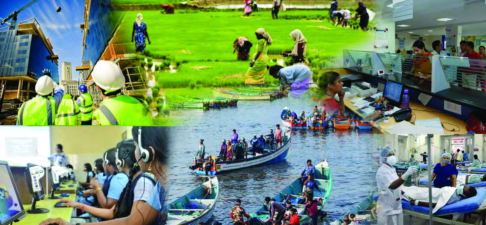
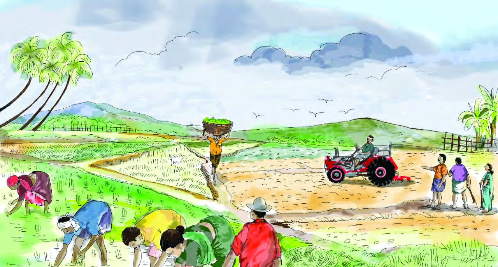
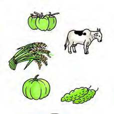
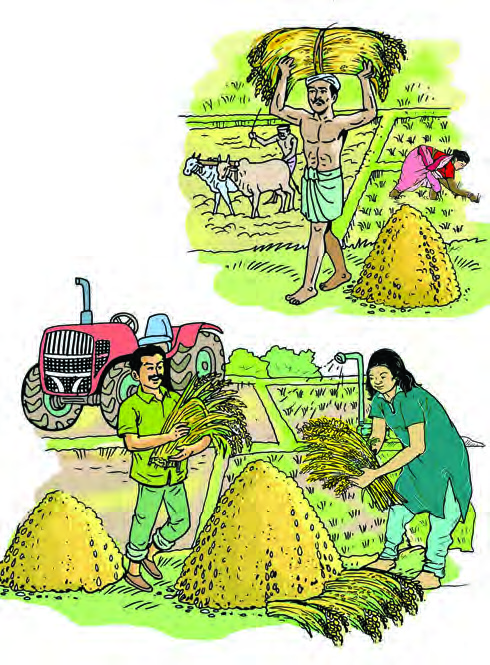

Human Resources for National
Development
We lead our lives by fulfilling our daily needs. What differentiates humans
from other living beings is the fact that they produce and distribute the goods
and services they need. Many factors are required to produce any product.
Picture of farmers cultivating paddy under the leadership of the local
‘Padashekhara Samrakshana Koottayma’is given below (Fig 4.1).
Fig 4.1
4
Page 77


Page 78


78
Social Science II
Part I
In previous classes, you have understood that the factors of
production are land, labour, capital and entrepreneurship.
These can also be called the economic resources. You have
found that all the natural resources, like soil and water, are part
of the Earth. Labour encompasses all intellectual or physical
efforts done by people for reward. We find that machines
and equipments are used in the paddy cultivation process.
All man-made resources that aid the production process are
capital. Entrepreneurship is the process of combining land,
capital and labour appropriately to make production possible.
The above four factors are essential in the production process
of any product. For utilising these, the land is rewarded
with rent, labour with wages, capital with interest and
entrepreneurship with profit.
Arrange the above factors you have identified, in the table
given below.
Land
Labour
Capital
Entrepreneurship/
Organisation)
Can you find out the factors used in paddy cultivation?
Farmfield
Seed
Page 79


79
Standard IX
Human Resources for National Development
Producers charge a fixed price and exchange the product in
markets. The money that they receive through this is their
income. How were goods exchanged when money did not
exist? The system that was prevalent in those days was that
the goods were exchanged for goods. This is known as Barter
System. This system had many drawbacks too.
What are the different purposes for which the paddy cultivated
in the farmlands can be used by the producers?
For food
For sale
Write down the disadvantages of the Barter System.
Difficulty in determining the price of goods
Can goods be exchanged for goods in all cases?
Page 80


80
Social Science II
Part I
How could have humans overcome these limitations that
existed in exchange? Look at the figure 4.2.
Plastic cards
Barter Products
Gold
Metal coins
Paper money
Electronic money
Fig 4.2
Evolution of Money
In the early stages of the evolution of money, many things
like animal skins, agricultural products, cattle etc. were used
as money. As metals became available, gold and various
types of metals and then metal coins were used as money.
Trade gradually shifted to paper money as it could be more
conveniently used as a common medium. As the concept of
market assumed new dimensions and technology started
dominating in all areas, money was transformed into a form
that we see today or are familiar with, such as card (plastic)
money and electronic money.
Page 81


81
Standard IX
Human Resources for National Development
With the acceptance of money as a common medium of
exchange, money became the basic unit of all economic
activities. Just as products were priced, all factors of
production could be priced and paid in terms of cash as
reward. Which form of remuneration reaches more people in
terms of rent, wages, interest and profit? In that case, which
factor of production is mostly used in the production process?
Labour is the most important factor in a production process.
For most people, wages earned for their labour are their source
of income.
Human Resource
We are now familiar with the factors of production (economic
resources) involved in the production process. Have you ever
thought of the importance of human resources among them?
The term ‛Human Resources' denotes people who can work
and can be used in the production process.
Human resources are able to convert the available natural
resources into products using physical powers and intelligence,
with the help of other factors of production.
Productivity is the critical component in determining the
quality of human resources. Are all people equally productive?
Observe the images (4.3a, 4.3b) given below.
Based on Fig 4.2, discuss the topic ' Evolution of Money' and
prepare a note by adding more ideas.
Page 82



82
Social Science II
Part I
Productivity is the ability of each factor of production to
produce goods and services.
People of a country are one of the factors that provide the
human resources of that country. Can the entire population of
a country be considered as human resources?
Observe and find out from figures 4.3(a) and 4.3(b), who are the
most productive producers and what factors helped them to do
so. Write it down.
.............................................................................................................................
.............................................................................................................................
.............................................................................................................................
Fig 4.3 (a)
Fig 4.3 (b)
Page 83


83
Standard IX
Human Resources for National Development
Fig 4.4
Population Pyramid 2011
What kind of people can be considered as the human resources
of the country? The main factors influencing human resources
are size, composition and skills of the population. Statistics
indicate that India ranks first in the world population. Observe
the Population Pyramid of India given below.
Observe the Population Pyramid of India (Fig 4.4) and try to
answer the following questions.
In which age group do we have the most number of people?
Which age group do you fall into?
Which age group has the least number of people?
Find the ratio of men and women (sex ratio) in each age
group.
-12.0
-11.0 -10.0 -9.0
-8.0
-7.0
-6.0 -5.0 -4.0 -3.0 -2.0 -1.0
00
1.0
2.0
3.0
4.0
5.0
6.0
7.0
8.0
9.0 10.0 11.0 12.0
80+
75-79
70-74
65-69
60-64
55-59
50-54
45-49
40-44
35-39
30-34
25-29
20-24
15-19
10-14
5-9
0-4
Female
Male
Population Pyramid 2011
Percentage of Population
Age group (in years)
source: National Health Profile 2022-17th issue
Page 84


84
Social Science II
Part I
Hope you have understood the structure of the Population
Pyramid. The population structure of a country consists of
people belonging to different age groups. It is not the size of the
population but its quality that determines human resources.
According to the Periodic Labour Force Survey (PLFS) Report
published by the Government of India in February 2023, the
labour force of the country is the population of 15 years of age
and above who are willing and able to work. If the number
of people belonging to this age structure is high, it positively
influences the income and growth of the economy.
You have understood what human resources and productivity
are. Can human resource productivity be increased? Human
resource is the dynamic factor of production. Human resources
can be made more efficient by ensuring higher education,
proper training and healthcare. Human capital formation
is possible when more investments are made on the above
factors to increase productivity.
Human Capital
Why do we acquire education? As human resources, we
become human capital through education and job training.
Human capital is the economic value of human resources.
Human capital formation is the additions made over periods
of time to the stock of human capital.
What does positively influence the income and the growth of a
country’s economy? Its population or labour force? Discuss and
prepare a note.
Which age group is likely to have more willingness and ability
to work? Why?
Page 85
85
Standard IX
Human Resources for National Development
It is necessary to increase the human capital if the growing
labour force in India’s population is to be benefi cial to the
country.
Provide better health facilities
Enable large scale investment in education
Emphasize skill development
Create an employee-friendly work environment
Factors Infl uencing Human Capital Formation
Factors infl uencing human capital formation include
education, healthcare, job training, migration and access to
information.
Write down the forms of human capital you are familiar with.
Farmers
Teachers
Scientists
How can we strengthen the human capital?
Page 86

86
Social Science II
Part I
Human Capital
Formation
Education
Health
Access to Information
Migration
Job Training
Fig 4.5
Factors influencing human capital formation
Let’s discuss in detail these factors that influence human
capital formation.
Education
Why do parents give so much importance to education?
What changes does education
bring in us? Aren’t educated
and skilled people a nation’s
asset? How do they influence
the
development of the
country?
Through education, people
can use modern technology
effectively,
acquire
better
jobs, earn more income and
thereby become an asset for
the growth of the country.
Apart
from
achieving
a
high
standard
of
living
through education, it is also
possible to create a society
with a high sense of values.
Development
of
human
resources into human capital
requires massive investment
in the public, cooperative and
private sectors.
It is essential for the modern era to achieve
maximum economic growth by integrating
intellectual
capacity
and
information
technology. The Knowledge Economy is an
economic system that utilises intelligence
along with innovative technological ideas and
information technology in various fields of
economic activities. It aims at the production of
intellectual products by converting intellectual
capacity into intellectual capital and also the
buying and selling of intellectual products.
Scientists, researchers, policymakers, experts
in shares and taxation and software developers
are human resources that strengthen this
sector. Institutions like Technopark and
Infopark are assets that accelerate the growth
of the Knowledge Economy.
Knowledge Economy
Page 87


87
Standard IX
Human Resources for National Development
Fig 4.6
Education
Increase in Ability
Technological Knowledge
Skill Development
Better Job
Better Income
Better Quality of Life
National Development
Through this type of investment, educational policies can
be implemented and technologically innovative projects can
be devised and implemented in the education sector. This is
essential for the growth and development of the economy.
A healthy population, like education, is an important factor
influencing human capital formation.
Health
What is health? The World Health Organization (WHO)
defines health as a state of physical, mental and social well-
being. People with poor health cannot contribute effectively
to the progress of the country unless they receive adequate
consideration and healthcare. How does declining health
affect individual and national development?
Observe the picture below and understand how education leads
to the progress of the country. Discuss and note down the ideas.
Page 88


88
Social Science II
Part I
Decreases productivity
Refrains from work
Slows down production
It is essential to ensure the healthcare of the people to achieve
the progress of the country along with raising the standard
of living of the individuals. Healthcare plays a fundamental
role in human resource development by influencing people's
productivity and by increasing the quality of life.
What are the healthcare measures to be taken to increase the
productivity of human resources? Give your suggestions.
Strengthen immune systems
Give importance to hygiene
Ensure adequate availability of nutritious foods
Provide better medical facilities
Ensure recreation and relaxation
Page 89


89
Standard IX
Human Resources for National Development
We see many establishments around us committed to
healthcare. Such healthcare centres are functioning in public,
private and co-operative sectors. Healthcare activities are
being carried out efficiently in the public sector with a
focus on public welfare. Different healthcare systems in the
public sector are health sub-centres, primary health centres,
community health centres, taluk hospitals, district hospitals
and medical colleges. In addition to this, many institutions
provide various treatment facilities in various fields like
Ayurveda, Yoga, Naturopathy, Unani and Homeopathy.
Government investments in the health sector strengthen
human capital formation. Preventive medicine, immunization,
curative medicine, access to nutritious food, promotion of
health literacy, supply of clean drinking water and sanitation
measures are implemented through health care systems. We
can be proud of the fact that Kerala is a model for the world’s
healthcare activities.
Migration
Is there anyone in your family working in other states or
foreign countries? Haven’t you noticed people moving from
our state to other states or foreign countries or from there
to our state or country for employment, education or for
a higher standard of living? Migration is the permanent or
temporary movement of people from one region to another
region. It causes many changes in the social, economic and
cultural spheres. It is the responsibility of the Government to
observe and understand the regional changes resulting from
migration and bear the expenditure to meet the basic needs.
This helps to form the human capital in the region.
Find out the various healthcare activities in your locality and
prepare a note.
Page 90


90
Social Science II
Part I
Job Training
Skill development training is mandatory for getting jobs
in certain fields. Doctors, engineers, and teachers acquire
professional skills through training courses suitable for
their fields. Similarly, the respective institutions provide job
training at various stages to their employees. Acquiring job
training can help increase productivity, thus enabling higher
output. Job training will bring human capital formation to its
peak.
Access to Information
Another factor that helps in human capital formation is access
to Information. Services in various sectors such as education,
health and employment give impetus to human capital
formation. Access to information needs to be fostered to
help people gather information about the services provided.
Government intervention is essential to enable human capital
formation by ensuring the access to information.
Challenges faced by Human Capital Formation
Poverty
Poverty is the state of not being able to meet even our basic
needs. This is the biggest challenge faced by human capital
formation. It is the low income that pushes people into poverty.
Due to low income, people are unable to meet even their basic
needs like education and health, fruther leading to poverty.
The causes and consequences of poverty are endlessly inter
connected as in a circle. Human capital formation will be
possible only if this is broken by improving human resources.
Observe the picture given below (Fig. 4.7) and discuss how the
causes and consequences of poverty are related.
Page 91


91
Standard IX
Human Resources for National Development
Poverty
Low income, low
purchasing power
High infant mortality
rate, low life expectancy,
increasing number of
dependents
Scarcity of food,
malnutrition, lack of access
to education, chronic illness
Low productivity, lack of
capacity to work
Fig 4.7
Poverty creates barriers to access adequate education
and healthcare. Central and state governments have been
formulating and implementing various schemes, policies and
laws periodically to free people from the clutches of poverty.
Kerala is a model to other states in implementing poverty
alleviation schemes.
Unemployment
Haven’t you heard about unemployment?
Collect information and make notes on various poverty
alleviation programmes and policies implemented by Central
and State Governments.
Page 92


92
Social Science II
Part I
How does unemployment affect our lives?
Unemployment is a condition in which a healthy and capable
person who is willing to work at the prevailing wage rate,
cannot find work. Lack of opportunities to get employment
on par with one’s education and skills hinders the maximum
utilisation of human resources. Human capital formation is
possible only if human resources are utilised to the maximum.
There are various types of unemployment in the country. The
important ones are given below.
Open unemployment, or, willing to work but unemployed.
Structural unemployment, or, job loss due to the
introduction of new technology.
Seasonal unemployment, or, employment during a
particular season and remaining unemployed during the
rest of the time.
Disguised unemployment, or, a condition where more
than the number of labourers required are employed in
production process without any change in total output.
Collect information related to unemployment from a few house-
holds in your neighbourhood. What type of unemployment
is most prevalent? Discuss and write down the causes and
solutions.
Page 93


93
Standard IX
Human Resources for National Development
The role of human capital formation in making a country an
economic power is boundless. We have found that the main
factors that influence human capital formation are education,
health, migration, job training, access to information etc.
Therefore, it is the prime duty of governments to give due
attention and consideration to these areas. A nation can
progress well by making human capital formation possible.
This can be done by effectively utilising human resources to
the full through suitable programmes, schemes and precise
planning.
1. ‘A change in the productivity of the factors of production
can increase the total output’. Based on this statement, find
out various ways to make factors of production like land,
labour, capital and entrepreneurship more productive.
2. Collect information on the educational policies implemented
by India since Independence to modernise the education
sector of the country. Prepare and present a seminar paper on
it.
3. Collect information about the various schemes initiated by the
state government to improve general education.
4. Collect information and prepare a note on the various schemes
implemented by the central and state governments in the
health sector.
Extended Activities
Page 94
MAP NOT TO SCALE
Page 95
CONSTITUTION OF INDIA
Part IV A
FUNDAMENTAL DUTIES OF CITIZENS
ARTICLE 51 A
Fundamental Duties- It shall be the duty of every citizen of India:
(a) to abide by the Constitution and respect its ideals and institutions,
the National Flag and the National Anthem;
(b) to cherish and follow the noble ideals which inspired our national struggle
for freedom;
(c) to uphold and protect the sovereignty, unity and integrity of India;
(d) to defend the country and render national service when called upon to do so;
(e) to promote harmony and the spirit of common brotherhood amongst all the
people of India transcending religious, linguistic and regional or sectional
diversities; to renounce practices derogatory to the dignity of women;
(f)
to value and preserve the rich heritage of our composite culture;
(g) to protect and improve the natural environment including forests, lakes, rivers,
wild life and to have compassion for living creatures;
(h) to develop the scientific temper, humanism and the spirit of inquiry and reform;
(i)
to safeguard public property and to abjure violence;
(j)
to strive towards excellence in all spheres of individual and collective activity
so that the nation constantly rises to higher levels of endeavour and
achievements;
(k) who is a parent or guardian to provide opportunities for education to his child or,
as the case may be, ward between age of six and fourteen years.
Page 96

• Right to freedom of speech and
expression.
• Right to life and liberty.
• Right to maximum survival and
development.
• Right to be respected and accepted
regardless of caste, creed and colour.
• Right to protection and care against
physical, mental and sexual abuse.
• Right to participation.
• Protection from child labour and
hazardous work.
• Protection against child marriage.
• Right to know one’s culture and live
accordingly.
• Protection against neglect.
• Right to free and compulsory
education.
• Right to learn, rest and leisure.
• Right to parental and societal care,
and protection.
Major Responsibilities
• Protect school and public facilities.
• Observe punctuality in learning
and activities of the school.
• Accept
and
respect
school
authorities, teachers, parents and
fellow students.
• Readiness to accept and respect
others regardless of caste, creed or
colour.
Dear Children,
Wouldn’t you like to know about your rights? Awareness about your rights will inspire
and motivate you to ensure your protection and participation, thereby making social
justice a reality. You may know that a commission for child rights is functioning in our
state called the Kerala State Commission for Protection of Child Rights.
Let’s see what your rights are:
Kerala State Commission for Protection of Child Rights
'Sree Ganesh', T. C. 14/2036, Vanross Junction
Kerala University P. O., Thiruvananthapuram - 34, Phone : 0471 - 2326603
Email: childrights.cpcr@kerala.gov.in, rte.cpcr@kerala.gov.in
Website : www.kescpcr.kerala.gov.in
Child Helpline - 1098, Crime Stopper - 1090, Nirbhaya - 1800 425 1400
Kerala Police Helpline - 0471 - 3243000/44000/45000
Contact Address:
Online R. T. E Monitoring : www.nireekshana.org.in
CHILDREN'S RIGHTS